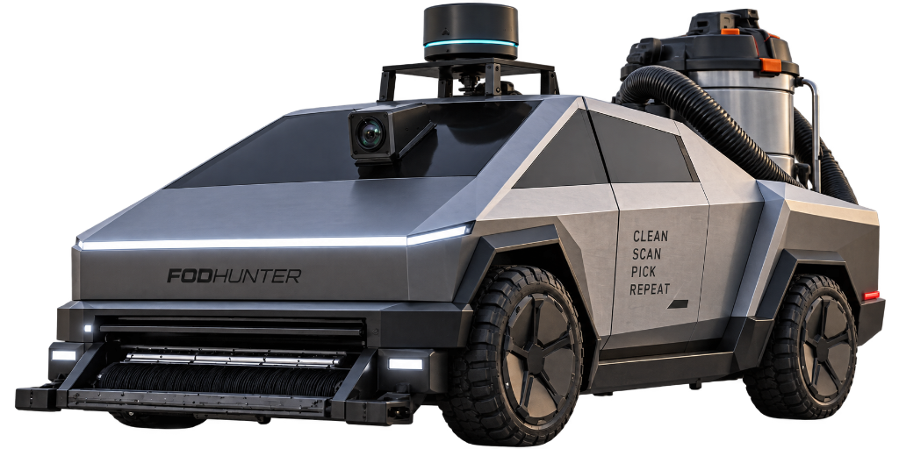

Development of an small-size autonomous wheeled robot for runway inspections
A high-speed collaborative multi-agent robotic system pairing autonomous UAV aerial macro-scouting with precision ground robotic extraction to safeguard active airfields.
Acknowledgements
Our team of four Mechanical Engineering students and one Electrical Engineering student was pushed beyond its comfort zone to apply knowledge from our NUS coursework to the technically demanding construction of our Innovation and Design Capstone, the FOD Hunter. With the power of friendship, grit and determination, we were able to overcome the challenges faced in this semester and produce a critical function prototype of the FOD Hunter.
We would like to thank the following individuals:
Dr Mark De Lessio and Dr Tang Kok Zuea, for their advice and direction throughout the project. Their liaison with stakeholders kept communication channels clear. They also initiated discussions on a potential Memorandum of Understanding between the Republic of Singapore Air Force and NUS iDP, which would allow future projects like ours to be channelled towards real-world impact.
Ms Annie Tan, Mr Patrick Tan, Mr Alvin Pon and Ms Mei Yin, for their enthusiasm, support and guidance during our hands-on work in the electronics workshop.
The National Servicemen who shared both positive and negative experiences with us. Their insights shaped our design around their operational needs.
Ms Cindy Koh, Representative from the Civil Aviation Authority of Singapore (CAAS), for her insights on the aviation industry, which informed the constraints of our design.
Executive summary
This project addresses the manual, labour-intensive process of clearing Foreign Object Debris (FOD) from airport runways. The team was first introduced to the problem by industry partner Mr Harry Lim of IO Inspire, and subsequent stakeholder interviews highlighted the potential for an autonomous, multi-robot solution. Such a system may offer a technically feasible and commercially viable alternative, particularly for low- to medium-traffic airports locally and globally.
FOD Hunter is the remediation half of the two-robot FOD Hunter × FOD Argus system: FOD Argus detects debris, whilst FOD Hunter removes it. A critical-function prototype of FOD Hunter has been achieved, with clearly defined roles across eight subsystems: navigation, communication, mechanical (chassis, suspension and FOD remediation), electrical (power and microcontroller), and computer vision.
This report details the testing and outcomes of each subsystem, followed by future work and a Gantt chart for AY2026/27 Semesters 1 and 2.
Communication has been established with the Republic of Singapore Air Force as a potential end user, and a site visit for live testing of both FOD Hunter and FOD Argus is being pursued.